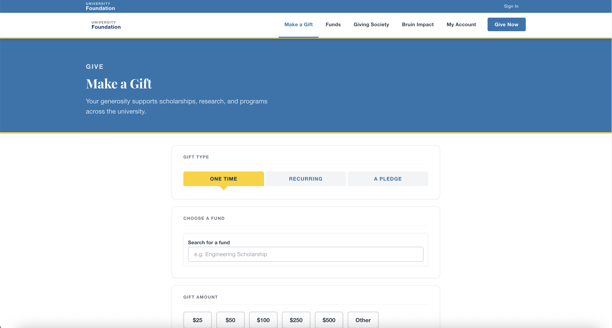
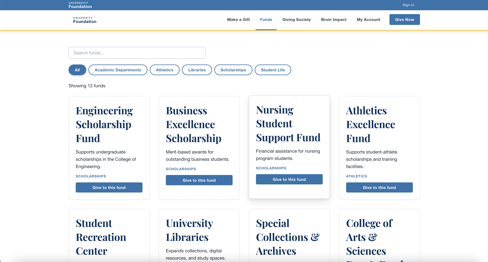
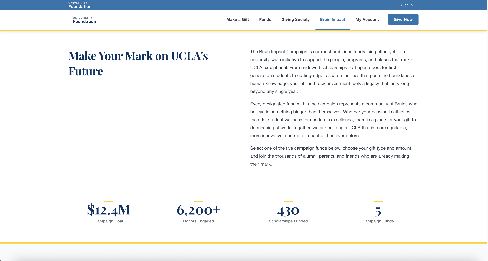
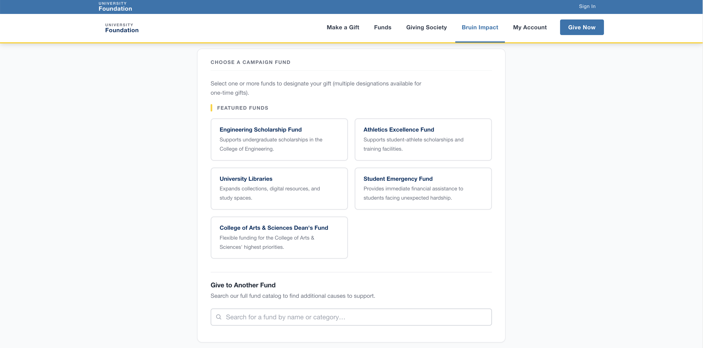
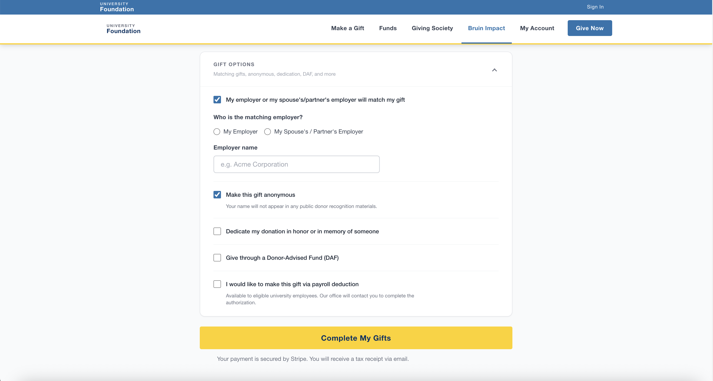

UCLA Online Giving Portal
Proof of ConceptProof of Concept — Not Launched to Production This project is a research-informed proof of concept. It demonstrates what a unified UCLA giving experience could look like, built using insights gathered from real users of UCLA's existing donor-facing platforms. The POC has not been deployed as a live product.
Project Overview
UCLA's online fundraising ecosystem spans three separate platforms — GiveToUCLA campaign sites, giving.ucla.edu, and department-level microsites — each maintained independently and incompatible with one another. The result is a fragmented donor journey, siloed fundraising data, and a growing backlog of maintenance debt for the technology team.
To explore what a better giving experience could look like, I conducted UX research with donors and advancement staff across UCLA's existing giving platforms, then used those insights to design and build a proof-of-concept unified Online Giving Portal. The POC was built full-stack — integrating Stripe for payment processing and using an AI-assisted development workflow — to validate the technical approach alongside the UX design. This is not a launched product; it is a working prototype intended to demonstrate feasibility and inform future investment decisions.
The Challenge
- Donors encountered three different visual identities and checkout flows depending on the fund they wanted to support
- Gift officers had no unified view of donor activity across platforms, making stewardship difficult
- Mobile conversion rates lagged significantly behind desktop due to outdated form patterns
- Campaign pages required IT involvement to launch, creating weeks-long delays for advancement staff
- Payment methods were limited — no Apple Pay, Google Pay, or recurring gift options
Design Process
1. Discovery & Stakeholder Research
Ran a series of stakeholder interviews across Advancement, IT, and the gift officer community. Mapped the existing giving journeys across all three platforms end-to-end, identifying the critical drop-off points and the administrative pain points that were slowing campaign execution. Key insight: advancement staff wanted a self-service campaign tool just as much as donors wanted a faster checkout.
2. Competitive Analysis & Benchmarking
Analyzed online giving portals from peer institutions (Michigan, Stanford, Harvard) alongside leading e-commerce patterns. Identified best-in-class patterns for fund discovery, recurring gift configuration, and campaign landing page design that could be adapted within UCLA's brand system.
3. Information Architecture & User Flows
Rebuilt the information architecture from the ground up — mapping the portal into four core experiences: Fund Discovery, Giving Form, Checkout, and Campaign Management. Created detailed user flows for both the donor path and the admin path to ensure neither was treated as secondary.
4. Wireframes & High-Fidelity Design
Designed wireframes for all major screens and iterated rapidly with feedback from gift officers and the development team. High-fidelity mockups followed UCLA brand guidelines while introducing a cleaner, more trust-building visual system — particularly on the checkout and confirmation screens where conversion rates were most at risk.
5. Usability Testing & Iteration
Conducted moderated usability tests with eight donors recruited through UCLA Alumni Affairs. Key iterations included simplifying the fund search experience, reducing the number of steps in the recurring gift setup, and improving error state clarity on the payment form.
Research Findings
- 72% of test participants completed a gift on mobile during usability testing, but 4 of 8 initially abandoned the recurring gift flow due to unclear configuration language
- Gift officers cited "waiting for IT to build a campaign page" as their #1 pain point — average wait time was 3–4 weeks per request
- Donors expressed hesitation on the payment screen due to unfamiliar platform branding; aligning checkout with UCLA's primary brand identity measurably increased perceived trust in follow-up surveys
Platform Screenshots





Before & After
- 3 separate giving platforms with inconsistent UX
- No mobile-optimized checkout flow
- IT required for every campaign page launch
- No recurring gift option for most funds
- Siloed data — no unified donor view
- Single unified portal with consistent UCLA branding
- Mobile-first checkout with Apple Pay & Google Pay
- Self-service campaign builder for advancement staff
- Recurring gift enrollment on any fund
- Consolidated data pipeline to advancement CRM
Outcome
The proof of concept demonstrates a viable path toward consolidating UCLA's three giving platforms into a single, cohesive donor experience. The full-stack POC — built with Stripe payment integration and an AI-assisted development workflow — validates both the UX design direction and the technical feasibility of the approach. Research conducted with donors on UCLA's existing platforms confirmed that the unified checkout, mobile-first design, and self-service campaign builder directly address the friction points that currently suppress conversion and increase IT workload.
UCLA's existing giving infrastructure processes over $50M in annual gifts across its fragmented platforms — this POC presents a design and technical foundation for consolidating that volume into a single, higher-performing experience. The project has not been launched to production and represents a proposal for future investment.